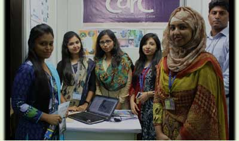
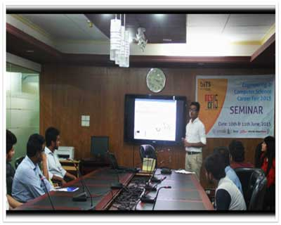
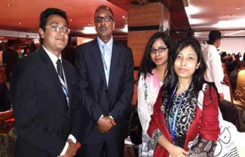
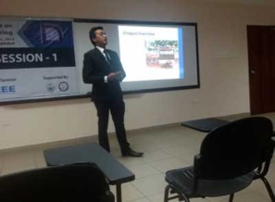

CARC Participating at 4D Exhibition
Starting from 27th April a five day program “4D Exhibition” was held at BRAC Centre Inn in light of the founder and Chairman of BRAC, Sir Fazle Hasan Abed’s 80th birthday. Various activities adjoining all the programs of BRAC were presented during the event. BRAC University also played a major part in the exhibition focusing the development of education system of BRAC with the message “From Literacy to Leadership”. The chronological progress of BRAC Education that began right after liberation war with adult literacy system in the distant rural areas and then developed to deprived children education and then to higher education technological training with last but not the least the start of BRAC University were all presented in the exhibition. Among the two projects presented on behalf of BRAC University as depiction of the innovation made by BRAC University students, the torque sensor based electric wheel chair was one. The other one was Chandrabot from Robotics Club of the university.
It should be mentioned that currently a collaborative study on the wheelchair is going on between CARC, BRAC University and Centre for the Rehabilitation of Paralysed (CRP) to study on the sustainability of the prototype in the practical field. Sir Fazle Hasan Abed, Lady Abed and all the other visitors greatly appreciated the initiative
CARC Director Attending SIGHT Meeting at Newark, NJ, USA
The director of the Control & Applications Research Centre (CARC), Dr. A. K. M. Abdul Malek Azad attended IEEE SIGHT Steering Committee meeting held at Newark, New Jersey, USA on 23rd April, 2016. The meeting comprised of various updates and implementation of innovations by the SIGHT groups in practical life. Dr. Azad discussed about the project on “Power Rickshaw-vans with Torque Sensor and PV Panel Support” in the conference. The SIGHT Steering committee Chair Kartik Kulkarni, Staff Leader Holly Schneider Brown, Program Co-ordinator Jackie Halliday and almost all the other members were present in the conference. They appreciated the project on power-rickshaw vans and discussed about its implementation in various parts of the world.
CARC Project Presented at IEEE sponsored FIFTH International Conference on Computing of Power, Energy & Communication (ICCPEIC) -2016
Organized by Adhiparasakthi Engineering College, Melmaruvathur, Kanchipuram district, CARC project on Real-Time Monitoring of Solar Battery Charging Station was presented at IEEE sponsored FIFTH International Conference on Computing of Power, Energy & Communication ICCPEIC -2016. The event took place on 20th and 21st April 2016. Lead Authors Abrar Alvi Chowdhury and Mirza Karishma Priyanka former thesis students contributing with research at CARC presented the paper in the conference. The other authors of the paper are thesis student Bushra Mahmud, Project Engineer Sheri Jahan Chowdhury and CARC director Dr. A. K. M. Abdul Malek Azad. The paper will be published at IEEE Xplore digital library.
CARC Attends Departmental Career Fair ECS CF 2015


On June 10 and 11 “Departmental Career Fair- ECS CF 2015" took place in BRAC University. Control & Applications Research Centre (CARC) had an active participation in the fair representing with great enthusiasm different projects and programs of the Electrical and Electronic Engineering students who have been doing different projects of CARC. Under the direction of CARC Director Dr. A. K. M. Abdul Malek Azad, Project Engineer Sheri Jahan Chowdhury arranged the stall activities with the help of the thesis students to represent their main projects in CARC.
Day 1 of the career fair mostly compiled of the various visitors including faculty members, students and other companies’ representatives coming to see the stall of CARC. Day 2 started with the same activities. At 2pm a seminar was held in the conference room of the BRAC Business School where among many speakers of the Department of Electrical and Electronic Engineering, Ataur Rahman, an undergraduate thesis final semester student involved in CARC project actively represented the major CARC activities through a short presentation. After a brief background of CARC he talked about the various synergy programs of CARC. His talk ended with a short video presentation of the Electrically Assisted Solar Powered Human Hauler, which had been his thesis work, and Ambulance Van, both of which are CARC production.
The fair was indeed a great experience especially for the alumni and the students in their final year. CARC hopes for more of such events where the engineering students have the chance to show their own activities and also meet various company representatives to know their demands or expectations from a job seeker.
CARC Project Presented 3rd International Conference on Advances in Electrical Engineering (ICAEE)


On 18th December, 2015, the former thesis students, Fabiha Roshni Khan, Anika Tasnim Aurony, Ataur Rahman and Faiza Munira from the Department of Electrical and Electronic Engineering of BRAC University attended the 3rd International Conference on Advances in Electrical Engineering (ICAEE). The conference took place for three days (17-19 December) at IUB campus, Dhaka, Bangladesh. Ataur Rahman, who is current research engineer of the Control & Applications Research Centre (CARC) of BRAC University presented the paper titled “Torque Sensor Based Electrically Assisted Hybrid Rickshaw Van with PV Assistance and Solar Battery Charging Station”. The research work which is based on the authors’ thesis under Dr. A. K. M. Abdul Malek Azad has been appreciated by Prof. Syed Mofizul Islam, a keynote speaker, who is the director of Centre for Smart Grid and Sustainable Power Systems at Curtin University, Australia and also many other researchers participating in the conference.
ICAEE was co-sponsored by IEEE Bangladesh section. Many distinguished scholars and researchers from all over the world participated in the conference. They shared the latest research results, advanced research methods and many exciting new areas. It was a great experience for BRAC students. The presented paper has been published at the digital library of IEEE Xplorer.
Power conservation for electric hybrid rickshaws with PV support
The first phase of CARC's research on the electric assisted rickshaw has come to an end this
Fall semester. The research was aimed to show the conservation of power for these green
fuel-free vehicles by PV assistance. This involves the installation of PV panels on top of
the vehicles so that the load power of the rickshaw can be shared by the panels and the battery;
plus the battery can also be charged during rest periods. Experimental testing of the designed
rickshaw has been conducted and it has been observed that performance of the rickshaw in terms
of running distance can be almost doubled for same amount of battery discharge.
This project will also be supplemented with the Solar Battery Charging Station (SBCS) that CARC
has implemented. The target is to reduce as much dependency from the national grid for charging
this rickshaw by combining the two projects. The pilot project for the SBCS is already ongoing
and it is designed to be completely independent of the national grid. The station will be used
to charge batteries that will be used in the PV assisted electric rickshaw. Results from the
pilot will be used to determine and analysis how much power can be saved from the national grid
overall.
Both these research projects are conducted in collaboration with The Beevatech LTD who is the
pioneer of the electrically assisted power rickshaws. Due to power consumption, for charging
the rickshaws, from the already overloaded national grid in significant amount, the government
of Bangladesh has placed a ban on commercialization of these electrically assisted power rickshaws
in spite of their relative cheap but quick transport facility. A report prepared from this project
will be provided to The Beevatech LTD which then will be presented to the concerned authority in an
effort to gain approval of commercialization of these rickshaws.
Recognition of the Control & Applications Research Group as a Research Centre
The year 2013 is marked as a milestone for the Control & Applications Research Group (CARG)
as it has been officially announced as a research centre by the Vice-Chancellor of BRACU, Prof.
Ainun Nishat. CARG has thus now become the Control & Applications Research Centre (CARC). Dr.
AKM Abdul Malek Azad, Professor, Dept. of EEE has been re-appointed as the Director of the
research centre heading the research team of Rafiur Rahman Surjo (Project Engineer),Sabbir
Ahmed Khan (Research Assistant) and graduate research students. Following this announcement,
CARC has been formed an Advisory Committee who would be sharing their highly valued opinion
about the projects undertaken at CARC and providing CARC with valuable guidance.
CARC is primarily focused on research on renewable and sustainable energy and bio-medical
technology. Its announcement as a research centre is an acknowledgment of its extensive
research work and their applications. Creating University-Industrial relationshipthrough
joint research is its second objective and CARC has already made significant progress by
creating relations with organizations like Energypac, Beevatech LTD,DPDC, IDCOL and Prokausholi
Sangsad LTD.
CARG Director, Prof. AKM Azad attends the IEEE Global Humanitarian Technology Conference (GHTC), Silicon Valley, California, USA
Dr. AKM Abdul Malek Azad has attended the GHTC 2013 this October where he has presented
the latest research results on the "Low Cost Cylindrical Lumen Testing Procedure" project.
Dr. Azad was presented with a certificate by the IEEE GHTC 2013 Chair, Keith Moore following
which he had a meeting with the Chair discussing about the future prospects of participation
in the GHTC from Bangladesh.
CARG has been a participant of the GHTC since 2011, when GHTC was first launched and has
been an official reviewer of the GHTC and has reviewed over 20 papers for the conference.
Approval of CARG SIGHT (Bangladesh)
It is a great pleasure to let everyone know that CARG SIGHT (Bangladesh) has been
approved by IEEE SIGHT. The group is now officially recognized and has been given
permission proceeding with the planed project under IEEE SIGHT supervision.
Mr. Peter Steaker, IEEE president handed over the SIGHT Fellowship award to Dr. Azad.
The fellowship was awarded as an appreciation towards the contribution that CARG has
towards the GHTC. During his visit to the US, Dr. Azad also met with the Steering
Committee about the future projects planned for the CARG SIGHT Bangladesh. Mr. Peter Steaker,
IEEE president handed over the SIGHT Fellowship award to Dr. Azad. The fellowship was awarded
as an appreciation towards the contribution that CARG has towards the GHTC. During his visit to
the US, Dr. Azad also met with the Steering Committee about the future projects planned for
the CARG SIGHT Bangladesh.
In recent years, IEEE has placed great emphasis on Humanitarian Technology Activities,
instituting the Humanitarian Ad Hoc Committee (HAHC) in 2011. As part of a strategic effort
toward member engagement, HAHC has instituted a program called Special Interest Group on
Humanitarian Technology (SIGHT).
CARG Publications and Paper Review
Two papers from CARG have been published into the GHTC 2013: "Low Cost Cylindrical Lumen Testing Procedure In Bangladesh Perspective" by CARG Research Assistant Sabbir Ahmed Khan, Project Engineer Rafiur Rahman Surjo, Research member Farah Shabnam and Head of CARG Prof. AKM Abdul Malek Azad; and "Hybridization of Solar Energy with National Grid to Power Classroom DC Loads" by thesis students Sharzana Reza, Rashik Ahmed, Shadmaan Patwary and Prof. AKM Abdul Malek Azad. Both papers will be published into the IEEE Digital Library. CARG has also reviewed several papers from the IEEE Global Humanitarian Technology Conference (GHTC) 2013 and the Journal of Renewable and Sustainable Energy. CARG has also been one of the official reviewers of the GHTC 2012 and the Journal of Renewable and Sustainable Energy and the Journal of Earth Science Research.
CARG members register for edX online course
The edX (www.edX.org) takes great courses, on various fields, from Universities such as MIT, Harvard, Cornell, California Berkeley, Boston, Texas system, McGill, Toronto and so on. This time edX is offering a new course on "Solar Energy". CARG Research Assistant (S.A. Khan), Project Engineer (R. Rahman), Research Associate (A. Faruq) and other research members have already registered for the course. Thousands of students from all over the world are taking courses and creating an international platform to interact with each other through virtual presence. Hence, it is an opportunity to prove our potential in an international level. Moreover, best student of the course will be invited to the Delft University of Technology for a Delft Solar Energy Center course of one week, to get hands-on lab experience with all the concepts taught in this Solar Energy course.
Solar Battery Charging Station implementation
The Solar Battery Charging Station (SBCS) is in its implementation stage after having the proposal for the pilot project approved by the BRACU. The project is conducted in collaboration between CARG and BEEVATECH LTD. The primary purpose of the project is to develop an Industrial-University relationship. The pilot project will feature a charging station, designed by CARG, powered by solar energy to charge batteries of the electrically assisted rickshaws. The project is headed by Dr. AKM Azad and the field work conducted by CARG Project Engineer Rafiur Rahman and Research Associate Asaduzzaman Al-Faruq. The project will be implemented of the rooftop of UB2 (Aarong house). The pilot project has been planned for 6 months, after which a report will be prepared on the project for BEEVATECH LTD and the concerned BRACU personnel.
Components Testing on Full swing
The Solar Home System (SHS) industry in Bangladesh is expanding rapidly since its inception in 2004. Due to the numerous manufacturers (local and foreign) the resulting device contains components that vary greatly in all parameters. As a result, the overall quality varies from organization to organization. This unstable quality is increasing with the increased number of SHS installation and thus the system inefficiency. Hence, standard qualification testing is very essential for our country's perspective. Considering this, CARG Testing Center of BRAC University is devoted to do SHS components testing prudently. This center has already got reputation for their authentic and austere reports. Since starting of this center, CARG has done several testing from different companies in Bangladesh. Last month, CARG testing center got their full swing by testing components for different solar companies. In fact, 3 LED tube lights have already been tested rigorously from three different companies and according to the regulation of Testing Center their report has been delivered on time (Within three working days).Hence, companies are very satisfied with rapid and trustworthy reports and they expressed their interest to send more components in this center near future. This triumph has become possible due to the systematic monitoring from Prof. AKM Azad (Head of CARG) and Prof. Sayeed Salam (Chairperson of the Department of EEE) and also for vigorous research members of this testing center.
CARG Solar power system Component test facility
Furthering the research on test procedures for solar powered system components, CARG has extended its test facility by developing procedures for testing quality of energy tracker (a.k.a inverter). A sample energy tracker was brought to CARG by Solar Intercontinental LTD. Following a successful test and collaboration between CARG and Solar Intercontinental LTD, the client submitted samples of solar LED lamps for quality tests. Samples of PV modules were submitted to CARG for testing by a recently launched company Japan Solartech (Bangladesh) LTD, who is a member of the Bangladesh Solar & Renewable Energy Association (BSREA). A number of other companies are further contacting CARG for testing the components/equipments used in solar powered systems acknowledging the quality of the service provided by CARG. The test facility was launched as a part of research on solar home systems components test procedures on which several publications have already been made and further research to improve the procedures are already on going.
Publications on May 2013
Publication of CARG's first Annual Report
The first annual report of CARG has been published in the month of May 2013.
The report contains all the up-to-date information on the projects, events,
publications and collaborations undertaken by CARG since its inauguration till date.
Conference and Journal Publications
Several publications, both conference and journal, have been made by CARG in the month of May.
Journal publication include "Social Impact of Solar Home System in rural Bangladesh: A Case
Study of Rural Zone" in the IAFOR(The International Academic Forum) Journal of Sustainability,
Energy and the Environment, vol. 1, issue 1, 2013 by Dr. AKM Azad and Research Assistant Sabbir
Ahmed Khan. The International Academic Forum is a confederation of leaders and opinion formers
around the globe who have one thing in common: a desire to make a difference. IAFOR is committed
to ensuring that Asian leaders and opinion formers in both the public and private sectors, in
education, the media, and business, have the chance to meet their colleagues from other continents,
and discuss issues of national and international relevance and importance.
Conference publications include papers submitted to IEEE TENCON Spring 2013 conference in Sydney,
Australia and IEEE GHTC (GLOBAL HUMANITARIAN TECHNOLOGY CONFERENCE) 2013 in Silicon Valley,
California.
The papers include "Low Cost Cylindrical Lumen Testing Procedure in Bangladesh Perspective" and
"Hybridization of Solar Energy with National Grid to Power Classroom DC Loads" for GHTC and "Effect
of Components on Solar Home System Output Power in Bangladesh Perspective" and "Implementation of
Hardware and Software of Solar Panel Testing Parameters" for TENCON. Both GHTC and TENCON are
prestigious
conferences organised by IEEE.
The first thesis defence from the Master of Science (M. Sc) in Electrical and Electronic Engineering of BRAC University
BRAC University is, proudly, the first to start Master of Science (M.Sc.) /
Master of Engineering (M.Engg) in Electrical and Electronic Engineering
program among the private Universities in Bangladesh. Ms. Marzia
Alam is the first graduate from the Master of Science (M.Sc.) in Electrical
and Electronic Engineering program to complete her thesis research.
And the first thesis defence from the Master of Science (M.Sc.) in Electrical
and Electronic Engineering of BRAC University took place on
Wednesday (21-11-12) in the GDLN centre of BRAC University. In front
of a panel board, consisting of Prof. Shahnawaz Ahmed
(visiting research professor, BUET), Prof. Sayeed Salam (Chairperson,
School of Engineering and Computer Science), Mr. Tarem Ahmed
(Senior lecturer, SECS) and Mrs. Sadia Kazi (Assistant Professor,
SECS), Marzia Alam defended her M.Sc. thesis supervised by Dr.
AKM Abdul Malek Azad on "Time-Delay Analysis of a Bio-Signal
Analyzer for Designing a Closed Loop Controller". This thesis presents
a biosensor based animal testing laboratory set up for research purpose.
The proposed will receive different physiological signal such as temperature,
ECG, respiratory rate etc through biosensors and the signal
will be transferred to the computer via 16 channels USB-4716 Data
Acquisition Card under different operating systems (Windows, Linux
and RT-Linux). The motivation for establishment of such a system
came from the scarcity of animal testing laboratory in the South Asian
region.
The Master of Science (M.Sc.)/Master of Engineering (M.Engg) in
Electrical and Electronic Engineering program was launched in 2010 as
a response to the ever growing demand of EEE graduates in our country
and has been successfully conducted with a growing number of students
in the department of EEE in BRAC University.
Participation in the 7th meeting of the working group of D8 on Industrial Cooperation 2012
The third D-8 (developing-eight) Ministerial
Meeting on Industries and the seventh meeting, first of its
kind in Bangladesh, of the working group
on Industrial Cooperation was held on Monday (Oct 8), aiming to create
a stronger platform for giving a boost to the establishment of an Automotive
Industry in Bangladesh, and trade and investment within the
member countries. Mr. Dilip Barua, Hon'ble Minister for Industries was
the chief guest of the conference. CARG, BRAC University was a proud
the chief guest of the conference. CARG, BRAC University was a
proud participant of the program (Automotive working group) that
was chaired by Prof. Ainun Nishat himself. The conference was attended
by representatives from the member countries of the D8 summit.
Dr. AKM Abdul Malek Azad was invited to participate the conference
from CARG as a resource person, which contributed to the making of
the policy guidelines for the automotive industry through the D8 meetings
held at the Winter Garden, Ruposhi Bangla Hotel. Such participations
are creating industrial links with our University and helping us
push the researches at CARG a step further.
Conference IEEE GHTC 2012
In the 2nd annual IEEE Global Humanitarian Technology Conference
- GHTC 2012, held on October 21-24, 2012 Seattle, Washington, USA
that attracted over 250 attendees from 22 countries, CARG (Control
and Applications Research Group) of BRAC University has presented
two successful research papers: "Solar Battery Charging Station
and Torque Sensor Based Electrically Assisted Tricycle",
and "The Solar Home System Component Testing". The papers were presented
by Dr. AKM Abdul Malek Azad, who headed these researches.
The presentation was followed by a conference where Dr. Azad had met
the director of UN Sustainable Energy, Mr. Knut Aanstad, to discuss
further prospects of CARG researches. These papers add to tally of the
thirty-three researches that have already been successfully completed and
appraised as novel and contributions made to the country through these
researches has been praiseworthy. The IEEE GHTC conference aims in
bringing together individuals who are working to improve the lives of the
billions of people around the world living at the bottom of the economic
pyramid.
CARG Member Attended Training of Trainers at IDCOL
In August 2012, Rafiur Rahman, Asaduzzaman Al Faruq and Ishtiaque Asad, members of CARG attended to a three day TOT (training of trainers) training session for arranged by IDCOL with the purpose of creating professional solar home system installation engineers. In day one, basics of PV systems were discussed. Day two focused on the installation of the system itself and finally in day three common problems and there solution was discussed. This session was conducted by Geoff Stapleton, Director & Principal Consultant, Global Sustainable Energy Solutions (GSES) Pty Ltd, Australia, who is an expert on PV system installation. It should also be noted that he is a part time faculty of UNSW (University of New South Wales), Australia.
CARG Member Attended ICIAS'2012 Conference
Marzia Alam, one of the research member of CARG as well as a faculty of EEE department , attended a three days long International Conference on Intelligent and Advanced System (ICIAS'2012) from June 12th to 14th in Kuala Lumpur, Malaysia. She was invited to present her paper "Time Delay Analysis of Biomedical Signal Analyzer in Hard Real-Time Linux Environment". The conference was organized by University Teknologi Petronas (UTP), one of the leading Universities in Malaysia. Control Application Research Group (CARG) of BRAC University had submitted one of their research papers and to the consequence of that, Marzia Alam had the privilege to attend that conference and present the paper. ICIAS'2012 conference is mainly sponsored by IEEE Malaysia Signal Processing Society with a joint collaboration with University Teknologi Petronas (UTP) to provide an excellent platform to share the advanced technological expertise and development for knowledge exchange between researcher, scientist, academicians and engineers. Marzia Alam was the only participant from Bangladesh other than people coming from India, Iran, Ghana, Singapore and UK. The opening of the ICIAS'2012 was chaired by Professor Dr. Micheal A Celia, Princeton University, USA.
5th Kuala Lumpur International Conference on Biomedical Engineering
Control and Applications Research Group (CARG) of Electrical and
Electronics Department is proud to inform that this month, one of its
members, Raska Urzoshi, participated and presented her paper on
"Micro controller based ECG simulator", in the 5th Kuala Lumpur International
Conference on Biomedical Engineering. The International Conference was
held in the capital of Malaysia, Kuala
Lumpur. This conference was in conjunction
with 8th Asian Pacific Conference
on Medical and Biological
Engineering which held on the 20th
to the 23th of June 2011 at Berjaya
Time Square Hotel located in the city heart. It was organized by the
Department of Biomedical Engineering, University of Malaya. This
was a great event which brought together academics and practitioners in
Engineering and medicine in this ever progressing field. Around two
hundred paper was published in the event. Among them fifty percent
was international.
The conference had a fantastic start with an inauguration speech by Dr.
Michael R. Neumann on 'Sensors and Instrumentation to meet clinical
needs'. After that the oral session started. There were all together four
hall rooms for oral sessions. Each session were chaired by experienced
professors such as M. R. Neumann, F. Ibrahim, and W.A. B. Abas and
so on. There were paper presentations starting from undergraduate level
to PhD level. Different category papers were presented. Some were on
Bio-signal processing, Biomedical Instrumentation, Bionanotechnology
and so on. People from different countries like Malaysia,
Taiwan, Saudi Arabia, Libya, and India were participating.
CARG Member Going Abroad For Higher Studies
Tahsin Faraz Our CARG project engineer, Tahsin Faraz, is going abroad to study in the Erasmus Mundus Joint Master's Programme in Environomical Pathways for Sustainable Energy, under an Erasmus Mundus Master's Course Category A scholarship. The programme is a joint degree initiative between the Royal Institute of Technology in Sweden (KTH), Eindhoven University of Technology in the Netherlands (TU/E), Technical University of Barcelona, Spain (UPC), Polytechnic University of Turin, Italy (PoliTo), Instituto Superior Tecnico in Portugal (IST), Aalto University School of Science and Technology in Finland (Aalto) and AGH University of Science and Technology in Poland (AGH). The master's programme offers advanced education in the field of sustainable energy systems for the future, namely solar, wind, geothermal, biomass, hydro, fuel cells etc. Raied Hassan CARG project engineer has been accepted for his M.Sc for the Electrical Engineering at the University of Calgary, Canada.
2nd International Conference on Environmental Science and Technology
In January, 2011, 2nd International Conference on Environmental Science and Technology, ICEST 2011 has accepted a paper which is titled "Characteristics and Cost Analysis of an Automatic Solar Hot Water System in Bangladesh" which is based on the CARG project "Automatic Solar Hot Water Heater". In this paper, a comparative analysis has been presented for different types of ETSC. Besides that, the characteristic of a solar hot water system is investigated though out a year. The experimental data have been used to determine the optimum operating temperature for the solar hot water system. Alongside, we also have calculated the payback of the system to determine its feasibility. The result shows that, our system can store the heat energy for 24 hours with a negligible 4% temperature drop in the stored hot water, which is perfectly accurate for the development of automatic solar hot water system. In terms of longevity, annual expenditure and maintenance cost, the solar hot water system is more cost effective than ordinary electric water heater (geyser).
CARG project engineer attends a seven-day solar camp in USA
Md. Raied Hasan, the project engineer of CARG went to USA to attend a seven-day solar camp, which was attended by lots of researchers, investors and learners of solar energy.
Inauguration of CARG, Dept. of EEE, A New Beginning
On the 6th of this month Professor Md. Quamrul Ahsan presented his
research findings on "Electric Power Crisis in Bangladesh and Its Potential
Solutions" at BRAC University. The Event was organized by Control
Application Research Group (CARG), Department of Electrical
and Electronic Engineering (EEE), BRAC University. CARG is a rather
young research group with expertise and activities in an area of system
and control engineering. The event was especially important because the
official website of CARG (http://carg.bracu.ac.bd) was launched by Professor
Md. Sayeed Salam, Chairman, Department of EEE, BRAC University,
at the beginning of the event.
The general outline of the event was, the website launching ceremony
then the presentation and finally a lively discussion session between the
speaker and the invited guests, mostly distinguished personals from major
organizations from the power sector of Bangladesh. The first event
organized by CARG was wrapped with a Vote of Thanks from Marzia
Alam, lecturer at the department of EEE, BRAC University.
The paper presents the unmet demand of a typical summer and a winter
day and the annual maximum un-served demand of last few years. To
present an idea about the magnitude of economic impact due to unserved
energy in the society the paper evaluates the annual power
interruption cost. The generation capacity expansion is a solution to
meet the growing demand and to reduce the un-served energy. However,
the installation of generating units requires time.
To reduce the present
crisis some of the factors regarding system operation, (i) optimal economic
operation of thermal units and (ii) exhaustive use of hydro resources,
are discussed along with their impacts on the reduction of the
present crisis.
Along with the strategies to reduce the present electric power crisis the
generation expansion is also an option to meet the growing demand.
This paper discusses the generation expansion planning procedure. In
expansion analysis, the major issues are the fuel for producing
electricity and the money for the implementation of the optimal plan. These two issues for BPS are
critically analyzed in the paper to arrive
at a conclusion. It is expected that the analysis will help system planners
derive options for fuels and generation of fund.
Finally, this month has been very eventful for CARG as a major conference
IASTED 2010, International Conference on Control and Applications,
has recently accepted a paper titled "Performance Comparison of
Traffic Light Control System Using GAL and FPGA". It is considered
to be a major achievement for CARG.